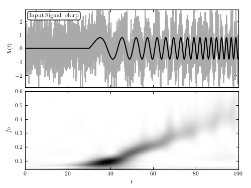

Chirp PSD¶
Compute the time/frequency power spectral density of the chirp signal

# Author: Jake VanderPlas <vanderplas@astro.washington.edu>
# License: BSD
# The figure produced by this code is published in the textbook
# "Statistics, Data Mining, and Machine Learning in Astronomy" (2013)
# For more information, see http://astroML.github.com
import numpy as np
from matplotlib import pyplot as plt
from astroML.fourier import FT_continuous, IFT_continuous, wavelet_PSD
#------------------------------------------------------------
# Define the chirp signal
def chirp(t, T, A, phi, omega, beta):
signal = A * np.sin(phi + omega * (t - T) + beta * (t - T) ** 2)
signal[t < T] = 0
return signal
def background(t, b0, b1, Omega1, Omega2):
return b0 + b1 * np.sin(Omega1 * t) * np.sin(Omega2 * t)
N = 4096
t = np.linspace(-50, 50, N)
h_true = chirp(t, -20, 0.8, 0, 0.2, 0.02)
h = h_true + np.random.normal(0, 1, N)
#------------------------------------------------------------
# Compute the wavelet PSD
f0 = np.linspace(0.04, 0.6, 100)
wPSD = wavelet_PSD(t, h, f0, Q=1.0)
#------------------------------------------------------------
# Plot the results
fig = plt.figure()
fig.subplots_adjust(hspace=0.05, left=0.1, right=0.95, bottom=0.1, top=0.95)
# Top: plot the data
ax = fig.add_subplot(211)
ax.plot(t + 50, h, '-', c='#AAAAAA', lw=1)
ax.plot(t + 50, h_true, '-k', lw=2)
ax.text(0.02, 0.95, "Input Signal: chirp",
ha='left', va='top', transform=ax.transAxes,
bbox=dict(boxstyle='round', fc='w', ec='k'))
ax.set_xlim(0, 100)
ax.set_ylim(-2.9, 2.9)
ax.xaxis.set_major_formatter(plt.NullFormatter())
ax.set_ylabel('$h(t)$')
# Bottom: plot the 2D PSD
ax = fig.add_subplot(212)
ax.imshow(wPSD, origin='lower', aspect='auto',
extent=[t[0] + 50, t[-1] + 50, f0[0], f0[-1]],
cmap=plt.cm.binary)
ax.text(0.02, 0.95, ("Wavelet PSD"), color='w',
ha='left', va='top', transform=ax.transAxes)
ax.set_xlim(0, 100)
ax.set_ylim(0.04, 0.6001)
ax.set_xlabel('$t$')
ax.set_ylabel('$f_0$')
plt.show()